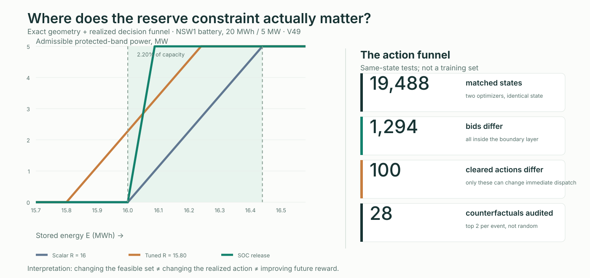

IFT6162 · Reinforcement Learning & Optimal Control · Mila / Université de Montréal
The value of
a constraint.
More freedom can cost money. This project separates three questions: where a reserve constraint changes the feasible bid, where it changes the cleared action, and where the local shadow price stops predicting long-term value.
Retrospective simulation · reused V27 panel · V49.3.2 audit · prospective December test pending
Part I · The problem
A bid is a decision made before the price is known.
The controller sees trailing prices and battery inventory. It submits a price-contingent charge and discharge curve. The market then clears that curve against an unknown price. The reserve row changes what the optimizer may offer, not what the market will accept.
Dynamics
Et+1 = Et + ηc ct Δt − dt Δt / ηdReserve row
(Δt / ηd) Σp<5000 qb ≤ max(0, Et − R(Et))Part II · What we built
Learning did real work. It did not win.
We trained and evaluated learned critics, decision-focused selection and cross-entropy search. The honest result is a modest, regime-dependent learned gain—not a controller that beats every tuned baseline.
+3,695 AUD
Stress total over the hand-designed value at R = 6, with +758 AUD five-window mean. V22 later showed this is not robust to tuning the hand value on non-evaluation periods.
+619 / +3,076 / −326
October, June and December AUD versus hand value at R = 6. The learned value wins 5/5 seeds in October and June but loses 5/5 in December: real, but regime-dependent.
Alias / repositioned
The SPO+ selector equals the point-MPC alias, not an independent success. CEM reserve search is dominated by the tuned-constant challenge: R = 15.80 captures 90.1% of V46's total gain.
Battery inventory
Cumulative net value difference
What does this mean for the oral defense?
The final V46 reserve rule is hand-designed. The project does not claim a learned controller that beats the tuned constant. The learning experiments are evidence about evaluation design, regime dependence and the difficulty of turning a local value estimate into a reliable policy improvement.
Part II · What we built
Move the inventory. Watch the feasible action change.
The shaded strip is the exact region where the V46 rule differs from R = 16. The sliders change the geometry of the admissible offer, not the market price or the bid optimizer.
Maximum protected-band offer
MW
Scalar R = 16
Constant R = 15.80
V46 release rule
Increasing the permissible offer is not the same as increasing cleared discharge or earning money. The bid optimizer and the realized price path determine the next step.

Part II · What we built
See the actual optimizer, not only the allowance.
Choose a saved event and inventory level. The chart shows the LP's actual discharge offers by price band for all three controllers, plus the realized price and cleared discharge.
Discharge offers by price band
MW
Scalar R = 16
Constant R = 15.80
V46 release
The vertical price line marks the realized interval price. Bands above that price may clear; the exact cleared quantity is in the readout. A larger offer is not automatically a larger cleared discharge.
Part III · Experiments
Follow two controllers through the same market.
These are real seven-day V27 runs, exported from the simulator. The browser switches between saved arrays; it does not rerun the LP. Select an event and a day, then scrub or play.
Market price
Stored energy
Cumulative net value versus scalar
Part III · Experiments
All fourteen events. Both baselines.
The five selection events and nine complementary events are shown together. Switch between the coarse scalar R = 16 and the tuned constant R = 15.80; the apparent advantage changes materially.
Paired event gain
AUD/event
Selected five
Complement nine
Negative gain
A positive bar is not a significance claim. The panel is reused; the complement was excluded from parameter selection but is not a fresh holdout.
Part IV · What we found
Same sign of shadow price. Opposite sign of long-run value.
Both interventions are in the February 2024 cluster. Both have a positive reserve-row shadow. Their future value diverges because the remaining price path changes what the stored energy is worth.
Battery inventory after the fork
Cumulative net advantage, including terminal mark
Part IV · What we found
Does one common V implement the whole family?
A single bid can satisfy KKT and still fail to be part of one inventory-dependent policy. Choose an event and slope cap; filled markers are converged fixed-weight certificates, open markers are unresolved.
Joint inverse slack by slope cap
AUD
Filled: converged certificate
Open: unresolved
13/18 main tests converged; 5/18 unresolved. Robust audit: 49/63 converged, 14/63 unresolved, 0 representable. This is not a universal CVaR-subgradient impossibility theorem.
Reduced-model CVaR certificate: finite enumeration versus continuous bid
The finite 17-candidate reduced model gives 18.1904761905 AUD. The continuous reduced-model value is 24.7065155 AUD, bracketed to about 3×10⁻⁸ AUD. The adversarial continuous bid is q = (0, 0.57, 4.43, 0, 0, 5) at E = 4 MWh.
Scope: three scenarios, two energies, six bands, mean-CVaR with β = 0.5 and α = 0.2. This is not a full-market certificate. The old 315.09 witness is withdrawn.
Part V · What comes next
What we tried, what survived, what changed.
Each row is a research family, not a version number. Expand for the method, strongest baseline, outcome and correction.
01Can learning improve battery decisions?
Learned critics, decision-focused forecasting and MPC were tested against tuned scalar baselines. Performance was highly evaluation-dependent; the learned critic was not promoted, and the SPO+ selector matched the point-MPC alias.
02Can price-contingent bids be represented through V alone?
V33–V42 inverse experiments showed that structural constraints can enlarge the implementable policy class. The reduced three-state, discharge-only model is nonrepresentable, with slacks 17.577 / 10.223 / 6.558 AUD.
03How can missing constraints be synthesized?
V42 minimal capped-polytope tests showed that specific target bids can be rationalized under synthesized caps, but the result is model- and target-specific. It motivated the later reserve-boundary study rather than a universal controller.
04Does a better reserve rule improve revenue?
V46 found +147.22 AUD/event over coarse R = 16 on 14 reused events. V47 then showed that tuned R = 15.80 captures 90.1% of the total gain. The original 14/14 result is real but not evidence of adaptive superiority.
05Where does the extra flexibility actually matter?
V47–V49 matched-state analysis found that all 1,294 bid differences lie in 16 < E < 16.439207 MWh. Only 100 of 19,488 matched states change the cleared action; 28 are audited counterfactuals.
06Does local optimization predict future value?
No. The reserve shadow is positive at all 28 audited states, but realized advantage ranges from −584.50 to +833.91 AUD and the Spearman correlation is −0.098. The shadow is a local LP signal, not a sequential value.
07Can the richer model represent entire policies?
V49.3.2 repaired the supporting-hyperplane reconstruction and CVaR membership test. Single-state full certificates forward-verify with regret below 3×10⁻⁸ AUD. The joint test has no representable case: 13/18 converged, 5/18 unresolved; 49/63 robust converged, 14/63 unresolved.
Part V · Evidence and limits
What survives, and what the experiment does not prove.
The economic comparison uses a reused 14-event validation panel. The complement was excluded from parameter selection but is not a fresh holdout. No FWER claim is made.
Representable
After repairing the supporting-hyperplane reconstruction, the full 10-band CVaR/charging inverse certificate reproduces the target bid with less than 3×10⁻⁸ AUD objective regret.
No representable case
13 of 18 tested configurations are converged fixed-weight certificates; 5 are unconverged. The robust audit gives 49 of 63 converged, 14 unconverged, and zero representable. All report positive tested slack.
Nonrepresentable
The reduced three-state, discharge-only, risk-neutral inverse slacks are 17.58, 10.22, and 6.56 AUD. A common concave continuation value does not rationalize the family.
19,488matched states
1,294bids differ
100cleared actions differ
28counterfactuals audited
Learned critics
Used as continuation-value approximations in the bid LP. They did not establish a robust improvement over the best hand-designed baseline.
No promotionDecision-focused learning
The SPO+ selector chose an initialization that equaled the point-MPC alias. It is disclosed as an alias, not an independent success.
AliasCross-entropy search
Useful for exploring reserve shapes, but the fine-constant challenge showed that most of the apparent feedback gain is a lower reserve level.
RepositionedWhy local shadow price is not a long-term value
The reserve-row dual measures the marginal value of relaxing the constraint at the current LP. It does not include the future price path, the option value of stored energy, or later clearing opportunities. In 28 selected states the shadow is positive everywhere, while realized advantage ranges from −584.50 to +833.91 AUD and the Spearman rank correlation is −0.098.
What is the exact effective-constraint result?
The physical power row bounds protected-band discharge by δ = PmaxΔt / ηd = 0.4392067575 MWh. Define aR(E) = min{δ, max(0, E − R(E))}. If two reserve curves have the same aR, they impose the same effective constraint. V46 differs from R = 16 only on 16 < E < 16.439207.
What does “no representable case” mean here?
It means no tested fixed-weight inverse problem found one common concave V that rationalizes the three target bids in the full 10-band CVaR/charging model. It is not a universal theorem over every CVaR subgradient: the unconverged runs and the unexhausted subgradient space are reported explicitly.
What is the prospective status?
The December 2026 prospective branch is frozen and excluded from the reported evidence. V48 is provenance only and is not pursued. No new reserve sweep is justified.